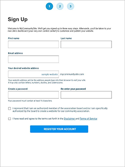
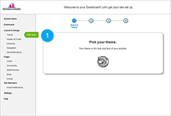
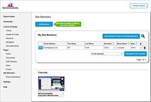
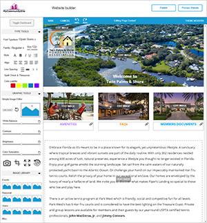

Download Designs (PDF)
- Home Page: Change "Join Me" text to "Sign Up"
- Home Page: Add an additional button for signing up for the site
- Sign Up: Minimize process from 5 to 3 steps
- Sign Up: Reformat the sign up page for clarity
- Sign Up: Provide additional information on pricing
- Add link for customers to call to pay with check or MO
- Offer customers a free trial, or provide additional information on product
Onboarding First Time Users

Download Designs (PDF)
- When the user first logs in, have them go through a step by step process that guides them through setting up their site with the minimal amount of information needed.
- This will assure the user that they are getting the service they need - being legally compliant in the state of Florida, and also teach them how to use this site.
- This could result in more users "handling" the website themselves - freeing up Shyft's time
- Left Nav: Reformat the navigation to group information by common category
- Themes: Provide more detailed images of the available themes to clarify the differences between them
- Documents: Keep legal documents separate from documents uploaded to other pages. This allows for more clear organization and minimize user error.
- Documents: Improve the UI of the documents section (see user interviews and heuristics for more information)
- Help and Documentation: We suggest taking the time to create more help documents that are textually short with images to help walk users through processes if needed.

Download Designs (PDF)
- In order to help those who may not understand CSV or Excel, we provide more information as to what they need to do to add a members list.
- Simplified column matching as a step-by-step, plain English process so that users can upload an excel document organized their own way.
- Descriptive text helps users along the way.
Dashboard and Site Builder

Download Designs (PDF)
- Add notifications to the dashboard. Notifications might include information about billing, new services added, or reminders about events that were posted.
- Add a tutorial page link to the dashboard and the navigation. Host all of the informative videos in one place.
- Invest the time in creating mroe accurate and understandable traning videos.
- Treat site building more as a WYSIWYG editor. Provide a way for the user to see what they are doing as they are doing it, similar to other website building services.
- Be generous, but still constraining in the tools you give the user as to not overload them with design choices.